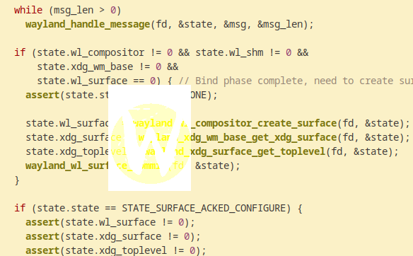

Philippe Gaultier
Philippe Gaultier
Philippe Gaultier
Philippe Gaultier
Published on 2023-10-12.
Discussions: Hacker News, Lobsters.
Wayland is all the rage those days. Distributions left and right switch to it, many readers of my previous article on writing a X11 GUI from scratch in x86_64 assembly asked for a follow-up article about Wayland, and I now run Wayland on my desktop. So here we go, let's write a (very simple) GUI program with Wayland, without any libraries, this time in C.
Here is what we are working towards:
We display the Wayland logo in its own window (we can see the mountain wallpaper in the background since we use a fixed size buffer). It's not quite Visual Studio yet, I know, but it's a good foundation for more in future articles, perhaps.
Why not in assembly again you ask? Well, the Wayland protocol has some peculiarities that necessitate the use of some C standard library macros to make it work reliably on different platforms (Linux, FreeBSD, etc): namely, sending a file descriptor over a UNIX socket. Maybe it could be done in assembly, but it would be much more tedious. Also, the Wayland protocol is completely asynchronous by nature, whereas the X11 protocol was more of a request-(maybe) response chatter, and as such, we have to keep track of some state in our program, and C makes it easier.
Now, if you want to follow along and translate the C snippets into assembly, go for it, it is doable, just tedious.
If you spot an error, please open a Github issue!
Not much: We'll use C99 so any C compiler of the last 20 years will do. Having a Wayland desktop to test the application will also greatly help.
Note that I have only run it on Linux; it should work (meaning: compile and run) on other platforms running Wayland such as FreeBSD, it's just that I have not tried.
Note that the code in this article has not been written in the most robust way, it simply exits when things are not how they should be for example. So, not production ready, but still a good learning resource and a good foundation for more.
Wayland is a protocol specification for GUI applications (and more), in short. We will write the client side, while the server side is a compositor which understands our protocol. If you have a Wayland desktop right now, a Wayland compositor is already running so there is nothing to do.
Much like X11, a client opens a UNIX socket, sends some commands in a specific format (which are different from the X11 ones), to open a window and the server can also send messages to notify the client to resize the window, that there is some keyboard input, etc. It's important to note that contrary to X11, in Wayland, the client only has access to its own window.
It is also interesting to note that Wayland is quite a limited protocol and any GUI will have to use extension protocols.
Most client applications use libwayland which is a library composed of C files that are autogenerated from a XML file describing the protocol.
The same goes for extension protocols: they simply are one XML file that is turned into C files, which are then compiled and linked to a GUI application.
Now, we will not do any of this: we will instead write our own serialization and deserialization functions, which is really not a lot of work as you will see.
There are many advantages:
libwayland requires.poll, select, epoll, io_uring, kqueue on some systems, etc. Here, we will use blocking calls for simplicity but the world is your oyster.So at this point you might be thinking: this is going to be so much work! Well, not really. Here are all of the Wayland protocol numeric values we will need, including the extension protocols:
C0static const uint32_t wayland_display_object_id = 1; 1static const uint16_t wayland_wl_registry_event_global = 0; 2static const uint16_t wayland_shm_pool_event_format = 0; 3static const uint16_t wayland_wl_buffer_event_release = 0; 4static const uint16_t wayland_xdg_wm_base_event_ping = 0; 5static const uint16_t wayland_xdg_toplevel_event_configure = 0; 6static const uint16_t wayland_xdg_toplevel_event_close = 1; 7static const uint16_t wayland_xdg_surface_event_configure = 0; 8static const uint16_t wayland_wl_display_get_registry_opcode = 1; 9static const uint16_t wayland_wl_registry_bind_opcode = 0; 10static const uint16_t wayland_wl_compositor_create_surface_opcode = 0; 11static const uint16_t wayland_xdg_wm_base_pong_opcode = 3; 12static const uint16_t wayland_xdg_surface_ack_configure_opcode = 4; 13static const uint16_t wayland_wl_shm_create_pool_opcode = 0; 14static const uint16_t wayland_xdg_wm_base_get_xdg_surface_opcode = 2; 15static const uint16_t wayland_wl_shm_pool_create_buffer_opcode = 0; 16static const uint16_t wayland_wl_surface_attach_opcode = 1; 17static const uint16_t wayland_xdg_surface_get_toplevel_opcode = 1; 18static const uint16_t wayland_wl_surface_commit_opcode = 6; 19static const uint16_t wayland_wl_display_error_event = 0; 20static const uint32_t wayland_format_xrgb8888 = 1; 21static const uint32_t wayland_header_size = 8; 22static const uint32_t color_channels = 4;
So, not that much!
The first step is opening a UNIX domain socket. Note that this step is exactly the same as for X11, save for the path of the socket. Also, X11 is designed to be used over the network so it does not have to be a UNIX domain socket, on the same machine - but everybody does so on their desktop machine anyway.
To craft the socket path, we follow these simple steps:
$WAYLAND_DISPLAY is set, attempt to connect to $XDG_RUNTIME_DIR/$WAYLAND_DISPLAY$XDG_RUNTIME_DIR/wayland-0Here goes, along with two utility macros we'll use everywhere:
C0#define cstring_len(s) (sizeof(s) - 1) 1 2#define roundup_4(n) (((n) + 3) & -4) 3 4static int wayland_display_connect() { 5 char *xdg_runtime_dir = getenv("XDG_RUNTIME_DIR"); 6 if (xdg_runtime_dir == NULL) 7 return EINVAL; 8 9 uint64_t xdg_runtime_dir_len = strlen(xdg_runtime_dir); 10 11 struct sockaddr_un addr = {.sun_family = AF_UNIX}; 12 assert(xdg_runtime_dir_len <= cstring_len(addr.sun_path)); 13 uint64_t socket_path_len = 0; 14 15 memcpy(addr.sun_path, xdg_runtime_dir, xdg_runtime_dir_len); 16 socket_path_len += xdg_runtime_dir_len; 17 18 addr.sun_path[socket_path_len++] = '/'; 19 20 char *wayland_display = getenv("WAYLAND_DISPLAY"); 21 if (wayland_display == NULL) { 22 char wayland_display_default[] = "wayland-0"; 23 uint64_t wayland_display_default_len = cstring_len(wayland_display_default); 24 25 memcpy(addr.sun_path + socket_path_len, wayland_display_default, 26 wayland_display_default_len); 27 socket_path_len += wayland_display_default_len; 28 } else { 29 uint64_t wayland_display_len = strlen(wayland_display); 30 memcpy(addr.sun_path + socket_path_len, wayland_display, 31 wayland_display_len); 32 socket_path_len += wayland_display_len; 33 } 34 35 int fd = socket(AF_UNIX, SOCK_STREAM, 0); 36 if (fd == -1) 37 exit(errno); 38 39 if (connect(fd, (struct sockaddr *)&addr, sizeof(addr)) == -1) 40 exit(errno); 41 42 return fd; 43}
In Wayland, there is no connection setup to do, such as sending some special messages, so there is nothing more to do.
Now, to do anything useful, we want to create a registry: it is an object that allows us to query at runtime the capabilities of the compositor.
In Wayland, to create an object, we simply send the right message followed by an id of our own. Ids should be unique so we simply increment a number each time we want to create a new resource. After this is done, we will remember this number to be able to refer to it in later messages:
This is coincidentally our first message we send, so let's briefly go over the structure of a Wayland message. It is basically a RPC mechanism. All bytes are in the host endianness so there is nothing special to do about it:
The object id in this case is 1, which is the singleton wl_display that already exists.
The method is: get_registry(u32 new_id) whose opcode we listed before.
The sole argument takes 4 bytes and is this incremental number we keep track of client-side.
It does not necessarily have to be incremental, but that's what libwayland does and also it's the easiest.
For convenience and efficiency, we always craft the message on the stack and do not allocate dynamic memory.
We first introduce a few utility functions to read and write parts of messages:
C0static void buf_write_u32(char *buf, uint64_t *buf_size, uint64_t buf_cap, 1 uint32_t x) { 2 assert(*buf_size + sizeof(x) <= buf_cap); 3 assert(((size_t)buf + *buf_size) % sizeof(x) == 0); 4 5 *(uint32_t *)(buf + *buf_size) = x; 6 *buf_size += sizeof(x); 7} 8 9static void buf_write_u16(char *buf, uint64_t *buf_size, uint64_t buf_cap, 10 uint16_t x) { 11 assert(*buf_size + sizeof(x) <= buf_cap); 12 assert(((size_t)buf + *buf_size) % sizeof(x) == 0); 13 14 *(uint16_t *)(buf + *buf_size) = x; 15 *buf_size += sizeof(x); 16} 17 18static void buf_write_string(char *buf, uint64_t *buf_size, uint64_t buf_cap, 19 char *src, uint32_t src_len) { 20 assert(*buf_size + src_len <= buf_cap); 21 22 buf_write_u32(buf, buf_size, buf_cap, src_len); 23 memcpy(buf + *buf_size, src, roundup_4(src_len)); 24 *buf_size += roundup_4(src_len); 25} 26 27static uint32_t buf_read_u32(char **buf, uint64_t *buf_size) { 28 assert(*buf_size >= sizeof(uint32_t)); 29 assert((size_t)*buf % sizeof(uint32_t) == 0); 30 31 uint32_t res = *(uint32_t *)(*buf); 32 *buf += sizeof(res); 33 *buf_size -= sizeof(res); 34 35 return res; 36} 37 38static uint16_t buf_read_u16(char **buf, uint64_t *buf_size) { 39 assert(*buf_size >= sizeof(uint16_t)); 40 assert((size_t)*buf % sizeof(uint16_t) == 0); 41 42 uint16_t res = *(uint16_t *)(*buf); 43 *buf += sizeof(res); 44 *buf_size -= sizeof(res); 45 46 return res; 47} 48 49static void buf_read_n(char **buf, uint64_t *buf_size, char *dst, uint64_t n) { 50 assert(*buf_size >= n); 51 52 memcpy(dst, *buf, n); 53 54 *buf += n; 55 *buf_size -= n; 56}
And we finally can send our first message:
C0static uint32_t wayland_wl_display_get_registry(int fd) { 1 uint64_t msg_size = 0; 2 char msg[128] = ""; 3 buf_write_u32(msg, &msg_size, sizeof(msg), wayland_display_object_id); 4 5 buf_write_u16(msg, &msg_size, sizeof(msg), 6 wayland_wl_display_get_registry_opcode); 7 8 uint16_t msg_announced_size = 9 wayland_header_size + sizeof(wayland_current_id); 10 assert(roundup_4(msg_announced_size) == msg_announced_size); 11 buf_write_u16(msg, &msg_size, sizeof(msg), msg_announced_size); 12 13 wayland_current_id++; 14 buf_write_u32(msg, &msg_size, sizeof(msg), wayland_current_id); 15 16 if ((int64_t)msg_size != send(fd, msg, msg_size, MSG_DONTWAIT)) 17 exit(errno); 18 19 printf("-> wl_display@%u.get_registry: wl_registry=%u\n", 20 wayland_display_object_id, wayland_current_id); 21 22 return wayland_current_id; 23}
And by calling it, we have created our very first Wayland resource!
From this point on, the utility functions to send Wayland messages (wayland_*) will not be included in the code snippets for brevity (but you will find all of the code at the end!), just because they all are similar to the one above.
To avoid drawing a frame in our application, and having to send all of the bytes over the socket to the compositor, there is a smarter approach: the buffer should be shared between the two processes, so that no copying is required.
We need to synchronize the access between the two so that presenting the frame does not happen while we are still drawing it, and Wayland has us covered here.
First, we need to create this buffer. We are going to make it easier for us by using a fixed size. Wayland is going to send us 'resize' events, whenever the window size changes, which we will acknowledge and ignore. This is done here just to simplify a bit the article, obviously in a real application, you would resize the buffer.
First, we introduce a struct that will hold all of the client-side state so that we remember which resources we have created so far. We also need a super simple state machine for later to track whether the surface (i.e. the 'frame' data) should be drawn to, as mentioned:
C0typedef enum state_state_t state_state_t; 1enum state_state_t { 2 STATE_NONE, 3 STATE_SURFACE_ACKED_CONFIGURE, 4 STATE_SURFACE_ATTACHED, 5}; 6 7typedef struct state_t state_t; 8struct state_t { 9 uint32_t wl_registry; 10 uint32_t wl_shm; 11 uint32_t wl_shm_pool; 12 uint32_t wl_buffer; 13 uint32_t xdg_wm_base; 14 uint32_t xdg_surface; 15 uint32_t wl_compositor; 16 uint32_t wl_surface; 17 uint32_t xdg_toplevel; 18 uint32_t stride; 19 uint32_t w; 20 uint32_t h; 21 uint32_t shm_pool_size; 22 int shm_fd; 23 uint8_t *shm_pool_data; 24 25 state_state_t state; 26};
We use it so in main():
C0 state_t state = { 1 .wl_registry = wayland_wl_display_get_registry(fd), 2 .w = 117, 3 .h = 150, 4 .stride = 117 * color_channels, 5 }; 6 7 // Single buffering. 8 state.shm_pool_size = state.h * state.stride;
The window is a rectangle, of width w and height h. We will use the color format xrgb8888 which is 4 color channels, each taking one bytes, so 4 bytes per pixel. This is one of the two formats that is guaranteed to be supported by the compositor per the specification. The stride counts how many bytes a horizontal row takes: w * 4.
And so, our buffer size for the frame is : w * h * 4. We use single buffering again for simplicity and also because we want to display a static image.
We could choose to use double or even triple buffering, thus respectively doubling or tripling the buffer size. The compositor is none the wiser - we would simply keep a counter client-side that increments each time we render a frame (and wraps around back to 0 when reaching the number of buffers), we would draw in the right location of this big buffer (i.e. at an offset), and attach the right part of the buffer to the surface. All the Wayland calls would remain the same.
Alright, time to really create this buffer, and not only keep track of its size:
C0static void create_shared_memory_file(uint64_t size, state_t *state) { 1 char name[255] = "/"; 2 for (uint64_t i = 1; i < cstring_len(name); i++) { 3 name[i] = ((double)rand()) / (double)RAND_MAX * 26 + 'a'; 4 } 5 6 int fd = shm_open(name, O_RDWR | O_EXCL | O_CREAT, 0600); 7 if (fd == -1) 8 exit(errno); 9 10 assert(shm_unlink(name) != -1); 11 12 if (ftruncate(fd, size) == -1) 13 exit(errno); 14 15 state->shm_pool_data = 16 mmap(NULL, size, PROT_READ | PROT_WRITE, MAP_SHARED, fd, 0); 17 assert((void*)-1 != state->shm_pool_data); 18 assert(state->shm_pool_data != NULL); 19 state->shm_fd = fd; 20}
We use shm_open(3) to create a POSIX shared memory object, so that we later can send the corresponding file descriptor to the compositor so that the latter also has access to it. The flags mean:
O_RDWR: Read-write.O_CREAT: If the file does not exist, create it.O_EXCL: Return an error if the shared memory object with this name already exists (we do not want that another running instance of the application gets by mistake the same memory buffer).We alternatively could use memfd_create(2) which spares us from crafting a unique path but this is Linux specific.
We craft a unique, random path to avoid clashes with other running applications.
Right after, we remove the file on the filesystem with shm_unlink to not leave any traces when the program finishes. Note that the file descriptor remains valid since our process still has the file open (there is a reference counting mechanism in the kernel behind the scenes).
We then resize with ftruncate and memory map this file with mmap(2), effectively allocating memory, with the MAP_SHARED flag to allow the compositor to also read this memory.
Later, we will send the file descriptor over the UNIX domain socket as ancillary data to the compositor.
Alright, we now have some memory to draw our frame to, but the compositor does not know of it yet. Let's tackle that now.
We are going to exchange messages back and forth over the socket with the compositor. Let's use plain old blocking calls in main like it's the 70's. We read as much as we can from the socket:
C0 while (1) { 1 char read_buf[4096] = ""; 2 int64_t read_bytes = recv(fd, read_buf, sizeof(read_buf), 0); 3 if (read_bytes == -1) 4 exit(errno); 5 6 char *msg = read_buf; 7 uint64_t msg_len = (uint64_t)read_bytes; 8 9 while (msg_len > 0) 10 wayland_handle_message(fd, &state, &msg, &msg_len); 11 } 12 }
The read buffer very likely now contains a sequence of various messages, which we parse and handle with
wayland_handle_message eagerly until the end of the buffer.
This might break if a message is spanning two different read buffers - a ring buffer would be more appropriate to handle this case gracefully, but again, for this article this is fine.
wayland_handle_message reads the header part of every message as described in the beginning, and reacts to known opcodes and objects:
C0static void wayland_handle_message(int fd, state_t *state, char **msg, 1 uint64_t *msg_len) { 2 assert(*msg_len >= 8); 3 4 uint32_t object_id = buf_read_u32(msg, msg_len); 5 assert(object_id <= wayland_current_id); 6 7 uint16_t opcode = buf_read_u16(msg, msg_len); 8 9 uint16_t announced_size = buf_read_u16(msg, msg_len); 10 assert(roundup_4(announced_size) <= announced_size); 11 12 uint32_t header_size = 13 sizeof(object_id) + sizeof(opcode) + sizeof(announced_size); 14 assert(announced_size <= header_size + *msg_len); 15 16 if (object_id == state->wl_registry && 17 opcode == wayland_wl_registry_event_global) { 18 // TODO 19 } 20 // Following: Lots of `if (opcode == ...) {... } else if (opcode = ...) { ... } [...]` 21}
At this point we have sent one message to the compositor: wl_display@1.get_registry() thanks to our C function wayland_wl_display_get_registry.
The compositor responds with a series of events, listing the available global objects, such as shared memory support, extension protocols, etc.
Each event contains the interface name, which is a string. Now, in the Wayland protocol, the string length gets padded to a multiple of four, so we have read those padding bytes as well.
If we see a global object that we are interested in, we create one of this type, and record the new id in our state structure for later use. While we're at it, we also handle error events. If the compositor does not like our messages, it will complain with some useful error messages in there:
C0 if (object_id == state->wl_registry && 1 opcode == wayland_wl_registry_event_global) { 2 uint32_t name = buf_read_u32(msg, msg_len); 3 4 uint32_t interface_len = buf_read_u32(msg, msg_len); 5 uint32_t padded_interface_len = roundup_4(interface_len); 6 7 char interface[512] = ""; 8 assert(padded_interface_len <= cstring_len(interface)); 9 10 buf_read_n(msg, msg_len, interface, padded_interface_len); 11 // The length includes the NULL terminator. 12 assert(interface[interface_len - 1] == 0); 13 14 uint32_t version = buf_read_u32(msg, msg_len); 15 16 printf("<- wl_registry@%u.global: name=%u interface=%.*s version=%u\n", 17 state->wl_registry, name, interface_len, interface, version); 18 19 assert(announced_size == sizeof(object_id) + sizeof(announced_size) + 20 sizeof(opcode) + sizeof(name) + 21 sizeof(interface_len) + padded_interface_len + 22 sizeof(version)); 23 24 char wl_shm_interface[] = "wl_shm"; 25 if (strcmp(wl_shm_interface, interface) == 0) { 26 state->wl_shm = wayland_wl_registry_bind( 27 fd, state->wl_registry, name, interface, interface_len, version); 28 } 29 30 char xdg_wm_base_interface[] = "xdg_wm_base"; 31 if (strcmp(xdg_wm_base_interface, interface) == 0) { 32 state->xdg_wm_base = wayland_wl_registry_bind( 33 fd, state->wl_registry, name, interface, interface_len, version); 34 } 35 36 char wl_compositor_interface[] = "wl_compositor"; 37 if (strcmp(wl_compositor_interface, interface) == 0) { 38 state->wl_compositor = wayland_wl_registry_bind( 39 fd, state->wl_registry, name, interface, interface_len, version); 40 } 41 42 return; 43 } else if (object_id == wayland_display_object_id && opcode == wayland_wl_display_error_event) { 44 uint32_t target_object_id = buf_read_u32(msg, msg_len); 45 uint32_t code = buf_read_u32(msg, msg_len); 46 char error[512] = ""; 47 uint32_t error_len = buf_read_u32(msg, msg_len); 48 buf_read_n(msg, msg_len, error, roundup_4(error_len)); 49 50 fprintf(stderr, "fatal error: target_object_id=%u code=%u error=%s\n", 51 target_object_id, code, error); 52 exit(EINVAL); 53 }
Remember: Since the Wayland protocol is a kind of RPC, we need to create the objects first before calling remote methods on them.
In terms of robustness, we do not have guarantees that every feature (i.e.: interface) we need in our application will be supported by the compositor. It could be a good idea to bail if the interfaces we require are not present.
We can now call methods on the new interfaces to create more entities we will need, namely:
wl_surfacexdg_surfacexdg_toplevelThe last two being entities from extension protocols, which is inconsequential in our implementation since we do not link against any libraries. This is just the same logic as the other messages and events from the core protocol.
Once we have done that, the surface is setup, and we commit it, to signal to the compositor to atomically apply the changes to the surface.
C0 while (msg_len > 0) 1 wayland_handle_message(fd, &state, &msg, &msg_len); 2 3 if (state.wl_compositor != 0 && state.wl_shm != 0 && 4 state.xdg_wm_base != 0 && 5 state.wl_surface == 0) { // Bind phase complete, need to create surface. 6 assert(state.state == STATE_NONE); 7 8 state.wl_surface = wayland_wl_compositor_create_surface(fd, &state); 9 state.xdg_surface = wayland_xdg_wm_base_get_xdg_surface(fd, &state); 10 state.xdg_toplevel = wayland_xdg_surface_get_toplevel(fd, &state); 11 wayland_wl_surface_commit(fd, &state); 12 } 13 }
For some entities, the Wayland compositor will send us a ping message and expect a pong back to ensure our application is responsive and not deadlocked or frozen.
We just have to add one more if to the long list of ifs to handle each event from the compositor:
C0if (object_id == state->xdg_wm_base && 1 opcode == wayland_xdg_wm_base_event_ping) { 2 uint32_t ping = buf_read_u32(msg, msg_len); 3 printf("<- xdg_wm_base@%u.ping: ping=%u\n", state->xdg_wm_base, ping); 4 wayland_xdg_wm_base_pong(fd, state, ping); 5 6 return; 7 }
Akin to the previous ping/pong mechanism, we receive a configure event for the xdg_surface and we reply with a ack_configure message.
This is an important milestone since from that point on, we can start rendering our frame! We thus advance our little state machine:
C0if (object_id == state->xdg_surface && 1 opcode == wayland_xdg_surface_event_configure) { 2 uint32_t configure = buf_read_u32(msg, msg_len); 3 printf("<- xdg_surface@%u.configure: configure=%u\n", state->xdg_surface, 4 configure); 5 wayland_xdg_surface_ack_configure(fd, state, configure); 6 state->state = STATE_SURFACE_ACKED_CONFIGURE; 7 8 return; 9 }
Once the configure/ack configure step has been completed, we can render a frame.
To do so, we need to create two final entities: a shared memory pool (wl_shm_pool) and a wl_buffer if they do not exist yet.
Finally, we fiddle with the pixel data anyway we want, remembering the color format we picked (XRGB8888), attach the buffer to the surface, and commit the surface.
This acts as synchronization mechanism between the client and the compositor to avoid presenting a half-rendered frame. To sum up:
ack_configure event signals us that we can start rendering the frameattach + commit messages to notify the compositor that the frame is ready to be presentedSo let's show a red rectangle as a warm-up. The alpha component is completely ignored as far as I can tell in this color format:
C0 if (state.state == STATE_SURFACE_ACKED_CONFIGURE) { 1 // Render a frame. 2 assert(state.wl_surface != 0); 3 assert(state.xdg_surface != 0); 4 assert(state.xdg_toplevel != 0); 5 6 if (state.wl_shm_pool == 0) 7 state.wl_shm_pool = wayland_wl_shm_create_pool(fd, &state); 8 if (state.wl_buffer == 0) 9 state.wl_buffer = wayland_wl_shm_pool_create_buffer(fd, &state); 10 11 assert(state.shm_pool_data != 0); 12 assert(state.shm_pool_size != 0); 13 14 uint32_t *pixels = (uint32_t *)state.shm_pool_data; 15 for (uint32_t i = 0; i < state.w * state.h; i++) { 16 uint8_t r = 0xff; 17 uint8_t g = 0; 18 uint8_t b = 0; 19 pixels[i] = (r << 16) | (g << 8) | b; 20 } 21 wayland_wl_surface_attach(fd, &state); 22 wayland_wl_surface_commit(fd, &state); 23 24 state.state = STATE_SURFACE_ATTACHED; 25 }
Result:
Let's render something more interesting. We download the Wayland logo, but we do not want to have to deal with a complicated format like PNG (because we then have to uncompress the image data with zlib or similar).
We thus convert it offline to a simpler image format, PPM6, and then embed the raw pixel data in our code as a byte array, skipping over the first 15 bytes which are metadata:
Shell0$ file wayland.png 1wayland.png: PNG image data, 117 x 150, 8-bit/color RGBA, non-interlaced 2$ convert wayland.png wayland.ppm 3$ file wayland.ppm 4wayland.ppm: Netpbm image data, size = 117 x 150, rawbits, pixmap 5$ xxd -s +15 -i wayland.ppm > wayland-logo.h 6$ sed -i 's/wayland_ppm/wayland_logo/g' wayland-logo.h
The resulting C array created by xxd will be named after the input file i.e. wayland_ppm. We rename it with the last command to something more human-readable.
The image is now in the RGB format (3 bytes per pixel), which we have to convert to the XRGB format (4 bytes per pixel). Our frame rendering loop becomes:
C0#include "wayland-logo.h" 1 2[...] 3 4 for (uint32_t i = 0; i < state.w * state.h; i++) { 5 uint8_t r = wayland_logo[i * 3 + 0]; 6 uint8_t g = wayland_logo[i * 3 + 1]; 7 uint8_t b = wayland_logo[i * 3 + 2]; 8 pixels[i] = (r << 16) | (g << 8) | b; 9 }
And finally we see the result.
Tiled:
Floating:

Note: We handle the absolute minimum set of events coming from the compositor to make it work in a simple way. If your particular compositor sends more events, they will have to be read (and possibly ignored). Since the Wayland protocol uses a Tag-Length-Value (TLV) encoding, one can simply skip over <length> bytes if the opcode is unknown. But some events will demand a reply (e.g. ping/pong)!
It was not that much work to go from zero to a working GUI application, albeit a simplistic one.
Compared to X11, it was a bit more work, but not that much. The barrier of entry is higher but the concepts and architecture are more sound, it seems to me.
The setup is a bit tedious but once this is done, we are in practice going to spend all of our time in the frame rendering code, and perhaps add support for a few additional events (we do not yet support keyboard or mouse events, for example, or animations, which would require us to notify the compositor that a region was 'damaged' meaning modified, and needs re-rendering).
Thus, I have the feeling that Wayland really goes out of the way once the initial scaffolding is done.
As for the next steps, I would like to draw some text, and react to user input events. Maybe even port something like microui, which only needs a few drawing routines, to our application.
Do not forget to generate wayland-logo.h with the aforementioned commands!
Compile with: cc -std=c99 wayland.c -Ofast.
C0#define _POSIX_C_SOURCE 200112L 1#include <assert.h> 2#include <errno.h> 3#include <fcntl.h> 4#include <inttypes.h> 5#include <stddef.h> 6#include <stdint.h> 7#include <stdio.h> 8#include <stdlib.h> 9#include <string.h> 10#include <sys/mman.h> 11#include <sys/socket.h> 12#include <sys/time.h> 13#include <sys/un.h> 14#include <unistd.h> 15 16#include "wayland-logo.h" 17 18#define cstring_len(s) (sizeof(s) - 1) 19 20#define roundup_4(n) (((n) + 3) & -4) 21 22static uint32_t wayland_current_id = 1; 23 24static const uint32_t wayland_display_object_id = 1; 25static const uint16_t wayland_wl_registry_event_global = 0; 26static const uint16_t wayland_shm_pool_event_format = 0; 27static const uint16_t wayland_wl_buffer_event_release = 0; 28static const uint16_t wayland_xdg_wm_base_event_ping = 0; 29static const uint16_t wayland_xdg_toplevel_event_configure = 0; 30static const uint16_t wayland_xdg_toplevel_event_close = 1; 31static const uint16_t wayland_xdg_surface_event_configure = 0; 32static const uint16_t wayland_wl_display_get_registry_opcode = 1; 33static const uint16_t wayland_wl_registry_bind_opcode = 0; 34static const uint16_t wayland_wl_compositor_create_surface_opcode = 0; 35static const uint16_t wayland_xdg_wm_base_pong_opcode = 3; 36static const uint16_t wayland_xdg_surface_ack_configure_opcode = 4; 37static const uint16_t wayland_wl_shm_create_pool_opcode = 0; 38static const uint16_t wayland_xdg_wm_base_get_xdg_surface_opcode = 2; 39static const uint16_t wayland_wl_shm_pool_create_buffer_opcode = 0; 40static const uint16_t wayland_wl_surface_attach_opcode = 1; 41static const uint16_t wayland_xdg_surface_get_toplevel_opcode = 1; 42static const uint16_t wayland_wl_surface_commit_opcode = 6; 43static const uint16_t wayland_wl_display_error_event = 0; 44static const uint32_t wayland_format_xrgb8888 = 1; 45static const uint32_t wayland_header_size = 8; 46static const uint32_t color_channels = 4; 47 48typedef enum state_state_t state_state_t; 49enum state_state_t { 50 STATE_NONE, 51 STATE_SURFACE_ACKED_CONFIGURE, 52 STATE_SURFACE_ATTACHED, 53}; 54 55typedef struct state_t state_t; 56struct state_t { 57 uint32_t wl_registry; 58 uint32_t wl_shm; 59 uint32_t wl_shm_pool; 60 uint32_t wl_buffer; 61 uint32_t xdg_wm_base; 62 uint32_t xdg_surface; 63 uint32_t wl_compositor; 64 uint32_t wl_surface; 65 uint32_t xdg_toplevel; 66 uint32_t stride; 67 uint32_t w; 68 uint32_t h; 69 uint32_t shm_pool_size; 70 int shm_fd; 71 uint8_t *shm_pool_data; 72 73 state_state_t state; 74}; 75 76static int wayland_display_connect() { 77 char *xdg_runtime_dir = getenv("XDG_RUNTIME_DIR"); 78 if (xdg_runtime_dir == NULL) 79 return EINVAL; 80 81 uint64_t xdg_runtime_dir_len = strlen(xdg_runtime_dir); 82 83 struct sockaddr_un addr = {.sun_family = AF_UNIX}; 84 assert(xdg_runtime_dir_len <= cstring_len(addr.sun_path)); 85 uint64_t socket_path_len = 0; 86 87 memcpy(addr.sun_path, xdg_runtime_dir, xdg_runtime_dir_len); 88 socket_path_len += xdg_runtime_dir_len; 89 90 addr.sun_path[socket_path_len++] = '/'; 91 92 char *wayland_display = getenv("WAYLAND_DISPLAY"); 93 if (wayland_display == NULL) { 94 char wayland_display_default[] = "wayland-0"; 95 uint64_t wayland_display_default_len = cstring_len(wayland_display_default); 96 97 memcpy(addr.sun_path + socket_path_len, wayland_display_default, 98 wayland_display_default_len); 99 socket_path_len += wayland_display_default_len; 100 } else { 101 uint64_t wayland_display_len = strlen(wayland_display); 102 memcpy(addr.sun_path + socket_path_len, wayland_display, 103 wayland_display_len); 104 socket_path_len += wayland_display_len; 105 } 106 107 int fd = socket(AF_UNIX, SOCK_STREAM, 0); 108 if (fd == -1) 109 exit(errno); 110 111 if (connect(fd, (struct sockaddr *)&addr, sizeof(addr)) == -1) 112 exit(errno); 113 114 return fd; 115} 116 117static void buf_write_u32(char *buf, uint64_t *buf_size, uint64_t buf_cap, 118 uint32_t x) { 119 assert(*buf_size + sizeof(x) <= buf_cap); 120 assert(((size_t)buf + *buf_size) % sizeof(x) == 0); 121 122 *(uint32_t *)(buf + *buf_size) = x; 123 *buf_size += sizeof(x); 124} 125 126static void buf_write_u16(char *buf, uint64_t *buf_size, uint64_t buf_cap, 127 uint16_t x) { 128 assert(*buf_size + sizeof(x) <= buf_cap); 129 assert(((size_t)buf + *buf_size) % sizeof(x) == 0); 130 131 *(uint16_t *)(buf + *buf_size) = x; 132 *buf_size += sizeof(x); 133} 134 135static void buf_write_string(char *buf, uint64_t *buf_size, uint64_t buf_cap, 136 char *src, uint32_t src_len) { 137 assert(*buf_size + src_len <= buf_cap); 138 139 buf_write_u32(buf, buf_size, buf_cap, src_len); 140 memcpy(buf + *buf_size, src, roundup_4(src_len)); 141 *buf_size += roundup_4(src_len); 142} 143 144static uint32_t buf_read_u32(char **buf, uint64_t *buf_size) { 145 assert(*buf_size >= sizeof(uint32_t)); 146 assert((size_t)*buf % sizeof(uint32_t) == 0); 147 148 uint32_t res = *(uint32_t *)(*buf); 149 *buf += sizeof(res); 150 *buf_size -= sizeof(res); 151 152 return res; 153} 154 155static uint16_t buf_read_u16(char **buf, uint64_t *buf_size) { 156 assert(*buf_size >= sizeof(uint16_t)); 157 assert((size_t)*buf % sizeof(uint16_t) == 0); 158 159 uint16_t res = *(uint16_t *)(*buf); 160 *buf += sizeof(res); 161 *buf_size -= sizeof(res); 162 163 return res; 164} 165 166static void buf_read_n(char **buf, uint64_t *buf_size, char *dst, uint64_t n) { 167 assert(*buf_size >= n); 168 169 memcpy(dst, *buf, n); 170 171 *buf += n; 172 *buf_size -= n; 173} 174 175static uint32_t wayland_wl_display_get_registry(int fd) { 176 uint64_t msg_size = 0; 177 char msg[128] = ""; 178 buf_write_u32(msg, &msg_size, sizeof(msg), wayland_display_object_id); 179 180 buf_write_u16(msg, &msg_size, sizeof(msg), 181 wayland_wl_display_get_registry_opcode); 182 183 uint16_t msg_announced_size = 184 wayland_header_size + sizeof(wayland_current_id); 185 assert(roundup_4(msg_announced_size) == msg_announced_size); 186 buf_write_u16(msg, &msg_size, sizeof(msg), msg_announced_size); 187 188 wayland_current_id++; 189 buf_write_u32(msg, &msg_size, sizeof(msg), wayland_current_id); 190 191 if ((int64_t)msg_size != send(fd, msg, msg_size, 0)) 192 exit(errno); 193 194 printf("-> wl_display@%u.get_registry: wl_registry=%u\n", 195 wayland_display_object_id, wayland_current_id); 196 197 return wayland_current_id; 198} 199 200static uint32_t wayland_wl_registry_bind(int fd, uint32_t registry, 201 uint32_t name, char *interface, 202 uint32_t interface_len, 203 uint32_t version) { 204 uint64_t msg_size = 0; 205 char msg[512] = ""; 206 buf_write_u32(msg, &msg_size, sizeof(msg), registry); 207 208 buf_write_u16(msg, &msg_size, sizeof(msg), wayland_wl_registry_bind_opcode); 209 210 uint16_t msg_announced_size = 211 wayland_header_size + sizeof(name) + sizeof(interface_len) + 212 roundup_4(interface_len) + sizeof(version) + sizeof(wayland_current_id); 213 assert(roundup_4(msg_announced_size) == msg_announced_size); 214 buf_write_u16(msg, &msg_size, sizeof(msg), msg_announced_size); 215 216 buf_write_u32(msg, &msg_size, sizeof(msg), name); 217 buf_write_string(msg, &msg_size, sizeof(msg), interface, interface_len); 218 buf_write_u32(msg, &msg_size, sizeof(msg), version); 219 220 wayland_current_id++; 221 buf_write_u32(msg, &msg_size, sizeof(msg), wayland_current_id); 222 223 assert(msg_size == roundup_4(msg_size)); 224 225 if ((int64_t)msg_size != send(fd, msg, msg_size, 0)) 226 exit(errno); 227 228 printf("-> wl_registry@%u.bind: name=%u interface=%.*s version=%u\n", 229 registry, name, interface_len, interface, version); 230 231 return wayland_current_id; 232} 233 234static uint32_t wayland_wl_compositor_create_surface(int fd, state_t *state) { 235 assert(state->wl_compositor > 0); 236 237 uint64_t msg_size = 0; 238 char msg[128] = ""; 239 buf_write_u32(msg, &msg_size, sizeof(msg), state->wl_compositor); 240 241 buf_write_u16(msg, &msg_size, sizeof(msg), 242 wayland_wl_compositor_create_surface_opcode); 243 244 uint16_t msg_announced_size = 245 wayland_header_size + sizeof(wayland_current_id); 246 assert(roundup_4(msg_announced_size) == msg_announced_size); 247 buf_write_u16(msg, &msg_size, sizeof(msg), msg_announced_size); 248 249 wayland_current_id++; 250 buf_write_u32(msg, &msg_size, sizeof(msg), wayland_current_id); 251 252 if ((int64_t)msg_size != send(fd, msg, msg_size, 0)) 253 exit(errno); 254 255 printf("-> wl_compositor@%u.create_surface: wl_surface=%u\n", 256 state->wl_compositor, wayland_current_id); 257 258 return wayland_current_id; 259} 260 261static void create_shared_memory_file(uint64_t size, state_t *state) { 262 char name[255] = "/"; 263 for (uint64_t i = 1; i < cstring_len(name); i++) { 264 name[i] = ((double)rand()) / (double)RAND_MAX * 26 + 'a'; 265 } 266 267 int fd = shm_open(name, O_RDWR | O_EXCL | O_CREAT, 0600); 268 if (fd == -1) 269 exit(errno); 270 271 assert(shm_unlink(name) != -1); 272 273 if (ftruncate(fd, size) == -1) 274 exit(errno); 275 276 state->shm_pool_data = 277 mmap(NULL, size, PROT_READ | PROT_WRITE, MAP_SHARED, fd, 0); 278 assert((void*)-1 != state->shm_pool_data); 279 assert(state->shm_pool_data != NULL); 280 state->shm_fd = fd; 281} 282 283static void wayland_xdg_wm_base_pong(int fd, state_t *state, uint32_t ping) { 284 assert(state->xdg_wm_base > 0); 285 assert(state->wl_surface > 0); 286 287 uint64_t msg_size = 0; 288 char msg[128] = ""; 289 buf_write_u32(msg, &msg_size, sizeof(msg), state->xdg_wm_base); 290 291 buf_write_u16(msg, &msg_size, sizeof(msg), wayland_xdg_wm_base_pong_opcode); 292 293 uint16_t msg_announced_size = wayland_header_size + sizeof(ping); 294 assert(roundup_4(msg_announced_size) == msg_announced_size); 295 buf_write_u16(msg, &msg_size, sizeof(msg), msg_announced_size); 296 297 buf_write_u32(msg, &msg_size, sizeof(msg), ping); 298 299 if ((int64_t)msg_size != send(fd, msg, msg_size, 0)) 300 exit(errno); 301 302 printf("-> xdg_wm_base@%u.pong: ping=%u\n", state->xdg_wm_base, ping); 303} 304 305static void wayland_xdg_surface_ack_configure(int fd, state_t *state, 306 uint32_t configure) { 307 assert(state->xdg_surface > 0); 308 309 uint64_t msg_size = 0; 310 char msg[128] = ""; 311 buf_write_u32(msg, &msg_size, sizeof(msg), state->xdg_surface); 312 313 buf_write_u16(msg, &msg_size, sizeof(msg), 314 wayland_xdg_surface_ack_configure_opcode); 315 316 uint16_t msg_announced_size = wayland_header_size + sizeof(configure); 317 assert(roundup_4(msg_announced_size) == msg_announced_size); 318 buf_write_u16(msg, &msg_size, sizeof(msg), msg_announced_size); 319 320 buf_write_u32(msg, &msg_size, sizeof(msg), configure); 321 322 if ((int64_t)msg_size != send(fd, msg, msg_size, 0)) 323 exit(errno); 324 325 printf("-> xdg_surface@%u.ack_configure: configure=%u\n", state->xdg_surface, 326 configure); 327} 328 329static uint32_t wayland_wl_shm_create_pool(int fd, state_t *state) { 330 assert(state->shm_pool_size > 0); 331 332 uint64_t msg_size = 0; 333 char msg[128] = ""; 334 buf_write_u32(msg, &msg_size, sizeof(msg), state->wl_shm); 335 336 buf_write_u16(msg, &msg_size, sizeof(msg), wayland_wl_shm_create_pool_opcode); 337 338 uint16_t msg_announced_size = wayland_header_size + 339 sizeof(wayland_current_id) + 340 sizeof(state->shm_pool_size); 341 342 assert(roundup_4(msg_announced_size) == msg_announced_size); 343 buf_write_u16(msg, &msg_size, sizeof(msg), msg_announced_size); 344 345 wayland_current_id++; 346 buf_write_u32(msg, &msg_size, sizeof(msg), wayland_current_id); 347 348 buf_write_u32(msg, &msg_size, sizeof(msg), state->shm_pool_size); 349 350 assert(roundup_4(msg_size) == msg_size); 351 352 // Send the file descriptor as ancillary data. 353 // UNIX/Macros monstrosities ahead. 354 char buf[CMSG_SPACE(sizeof(state->shm_fd))] = ""; 355 356 struct iovec io = {.iov_base = msg, .iov_len = msg_size}; 357 struct msghdr socket_msg = { 358 .msg_iov = &io, 359 .msg_iovlen = 1, 360 .msg_control = buf, 361 .msg_controllen = sizeof(buf), 362 }; 363 364 struct cmsghdr *cmsg = CMSG_FIRSTHDR(&socket_msg); 365 cmsg->cmsg_level = SOL_SOCKET; 366 cmsg->cmsg_type = SCM_RIGHTS; 367 cmsg->cmsg_len = CMSG_LEN(sizeof(state->shm_fd)); 368 369 *((int *)CMSG_DATA(cmsg)) = state->shm_fd; 370 socket_msg.msg_controllen = CMSG_SPACE(sizeof(state->shm_fd)); 371 372 if (sendmsg(fd, &socket_msg, 0) == -1) 373 exit(errno); 374 375 printf("-> wl_shm@%u.create_pool: wl_shm_pool=%u\n", state->wl_shm, 376 wayland_current_id); 377 378 return wayland_current_id; 379} 380 381static uint32_t wayland_xdg_wm_base_get_xdg_surface(int fd, state_t *state) { 382 assert(state->xdg_wm_base > 0); 383 assert(state->wl_surface > 0); 384 385 uint64_t msg_size = 0; 386 char msg[128] = ""; 387 buf_write_u32(msg, &msg_size, sizeof(msg), state->xdg_wm_base); 388 389 buf_write_u16(msg, &msg_size, sizeof(msg), 390 wayland_xdg_wm_base_get_xdg_surface_opcode); 391 392 uint16_t msg_announced_size = wayland_header_size + 393 sizeof(wayland_current_id) + 394 sizeof(state->wl_surface); 395 assert(roundup_4(msg_announced_size) == msg_announced_size); 396 buf_write_u16(msg, &msg_size, sizeof(msg), msg_announced_size); 397 398 wayland_current_id++; 399 buf_write_u32(msg, &msg_size, sizeof(msg), wayland_current_id); 400 401 buf_write_u32(msg, &msg_size, sizeof(msg), state->wl_surface); 402 403 if ((int64_t)msg_size != send(fd, msg, msg_size, 0)) 404 exit(errno); 405 406 printf("-> xdg_wm_base@%u.get_xdg_surface: xdg_surface=%u wl_surface=%u\n", 407 state->xdg_wm_base, wayland_current_id, state->wl_surface); 408 409 return wayland_current_id; 410} 411 412static uint32_t wayland_wl_shm_pool_create_buffer(int fd, state_t *state) { 413 assert(state->wl_shm_pool > 0); 414 415 uint64_t msg_size = 0; 416 char msg[128] = ""; 417 buf_write_u32(msg, &msg_size, sizeof(msg), state->wl_shm_pool); 418 419 buf_write_u16(msg, &msg_size, sizeof(msg), 420 wayland_wl_shm_pool_create_buffer_opcode); 421 422 uint16_t msg_announced_size = 423 wayland_header_size + sizeof(wayland_current_id) + sizeof(uint32_t) * 5; 424 assert(roundup_4(msg_announced_size) == msg_announced_size); 425 buf_write_u16(msg, &msg_size, sizeof(msg), msg_announced_size); 426 427 wayland_current_id++; 428 buf_write_u32(msg, &msg_size, sizeof(msg), wayland_current_id); 429 430 uint32_t offset = 0; 431 buf_write_u32(msg, &msg_size, sizeof(msg), offset); 432 433 buf_write_u32(msg, &msg_size, sizeof(msg), state->w); 434 435 buf_write_u32(msg, &msg_size, sizeof(msg), state->h); 436 437 buf_write_u32(msg, &msg_size, sizeof(msg), state->stride); 438 439 uint32_t format = wayland_format_xrgb8888; 440 buf_write_u32(msg, &msg_size, sizeof(msg), format); 441 442 if ((int64_t)msg_size != send(fd, msg, msg_size, 0)) 443 exit(errno); 444 445 printf("-> wl_shm_pool@%u.create_buffer: wl_buffer=%u\n", state->wl_shm_pool, 446 wayland_current_id); 447 448 return wayland_current_id; 449} 450 451static void wayland_wl_surface_attach(int fd, state_t *state) { 452 assert(state->wl_surface > 0); 453 assert(state->wl_buffer > 0); 454 455 uint64_t msg_size = 0; 456 char msg[128] = ""; 457 buf_write_u32(msg, &msg_size, sizeof(msg), state->wl_surface); 458 459 buf_write_u16(msg, &msg_size, sizeof(msg), wayland_wl_surface_attach_opcode); 460 461 uint16_t msg_announced_size = 462 wayland_header_size + sizeof(state->wl_buffer) + sizeof(uint32_t) * 2; 463 assert(roundup_4(msg_announced_size) == msg_announced_size); 464 buf_write_u16(msg, &msg_size, sizeof(msg), msg_announced_size); 465 466 buf_write_u32(msg, &msg_size, sizeof(msg), state->wl_buffer); 467 468 uint32_t x = 0, y = 0; 469 buf_write_u32(msg, &msg_size, sizeof(msg), x); 470 buf_write_u32(msg, &msg_size, sizeof(msg), y); 471 472 if ((int64_t)msg_size != send(fd, msg, msg_size, 0)) 473 exit(errno); 474 475 printf("-> wl_surface@%u.attach: wl_buffer=%u\n", state->wl_surface, 476 state->wl_buffer); 477} 478 479static uint32_t wayland_xdg_surface_get_toplevel(int fd, state_t *state) { 480 assert(state->xdg_surface > 0); 481 482 uint64_t msg_size = 0; 483 char msg[128] = ""; 484 buf_write_u32(msg, &msg_size, sizeof(msg), state->xdg_surface); 485 486 buf_write_u16(msg, &msg_size, sizeof(msg), 487 wayland_xdg_surface_get_toplevel_opcode); 488 489 uint16_t msg_announced_size = 490 wayland_header_size + sizeof(wayland_current_id); 491 assert(roundup_4(msg_announced_size) == msg_announced_size); 492 buf_write_u16(msg, &msg_size, sizeof(msg), msg_announced_size); 493 494 wayland_current_id++; 495 buf_write_u32(msg, &msg_size, sizeof(msg), wayland_current_id); 496 497 if ((int64_t)msg_size != send(fd, msg, msg_size, 0)) 498 exit(errno); 499 500 printf("-> xdg_surface@%u.get_toplevel: xdg_toplevel=%u\n", 501 state->xdg_surface, wayland_current_id); 502 503 return wayland_current_id; 504} 505 506static void wayland_wl_surface_commit(int fd, state_t *state) { 507 assert(state->wl_surface > 0); 508 509 uint64_t msg_size = 0; 510 char msg[128] = ""; 511 buf_write_u32(msg, &msg_size, sizeof(msg), state->wl_surface); 512 513 buf_write_u16(msg, &msg_size, sizeof(msg), wayland_wl_surface_commit_opcode); 514 515 uint16_t msg_announced_size = wayland_header_size; 516 assert(roundup_4(msg_announced_size) == msg_announced_size); 517 buf_write_u16(msg, &msg_size, sizeof(msg), msg_announced_size); 518 519 if ((int64_t)msg_size != send(fd, msg, msg_size, 0)) 520 exit(errno); 521 522 printf("-> wl_surface@%u.commit: \n", state->wl_surface); 523} 524 525static void wayland_handle_message(int fd, state_t *state, char **msg, 526 uint64_t *msg_len) { 527 assert(*msg_len >= 8); 528 529 uint32_t object_id = buf_read_u32(msg, msg_len); 530 assert(object_id <= wayland_current_id); 531 532 uint16_t opcode = buf_read_u16(msg, msg_len); 533 534 uint16_t announced_size = buf_read_u16(msg, msg_len); 535 assert(roundup_4(announced_size) <= announced_size); 536 537 uint32_t header_size = 538 sizeof(object_id) + sizeof(opcode) + sizeof(announced_size); 539 assert(announced_size <= header_size + *msg_len); 540 541 if (object_id == state->wl_registry && 542 opcode == wayland_wl_registry_event_global) { 543 uint32_t name = buf_read_u32(msg, msg_len); 544 545 uint32_t interface_len = buf_read_u32(msg, msg_len); 546 uint32_t padded_interface_len = roundup_4(interface_len); 547 548 char interface[512] = ""; 549 assert(padded_interface_len <= cstring_len(interface)); 550 551 buf_read_n(msg, msg_len, interface, padded_interface_len); 552 // The length includes the NULL terminator. 553 assert(interface[interface_len - 1] == 0); 554 555 uint32_t version = buf_read_u32(msg, msg_len); 556 557 printf("<- wl_registry@%u.global: name=%u interface=%.*s version=%u\n", 558 state->wl_registry, name, interface_len, interface, version); 559 560 assert(announced_size == sizeof(object_id) + sizeof(announced_size) + 561 sizeof(opcode) + sizeof(name) + 562 sizeof(interface_len) + padded_interface_len + 563 sizeof(version)); 564 565 char wl_shm_interface[] = "wl_shm"; 566 if (strcmp(wl_shm_interface, interface) == 0) { 567 state->wl_shm = wayland_wl_registry_bind( 568 fd, state->wl_registry, name, interface, interface_len, version); 569 } 570 571 char xdg_wm_base_interface[] = "xdg_wm_base"; 572 if (strcmp(xdg_wm_base_interface, interface) == 0) { 573 state->xdg_wm_base = wayland_wl_registry_bind( 574 fd, state->wl_registry, name, interface, interface_len, version); 575 } 576 577 char wl_compositor_interface[] = "wl_compositor"; 578 if (strcmp(wl_compositor_interface, interface) == 0) { 579 state->wl_compositor = wayland_wl_registry_bind( 580 fd, state->wl_registry, name, interface, interface_len, version); 581 } 582 583 return; 584 } else if (object_id == wayland_display_object_id && 585 opcode == wayland_wl_display_error_event) { 586 uint32_t target_object_id = buf_read_u32(msg, msg_len); 587 uint32_t code = buf_read_u32(msg, msg_len); 588 char error[512] = ""; 589 uint32_t error_len = buf_read_u32(msg, msg_len); 590 buf_read_n(msg, msg_len, error, roundup_4(error_len)); 591 592 fprintf(stderr, "fatal error: target_object_id=%u code=%u error=%s\n", 593 target_object_id, code, error); 594 exit(EINVAL); 595 } else if (object_id == state->wl_shm && 596 opcode == wayland_shm_pool_event_format) { 597 598 uint32_t format = buf_read_u32(msg, msg_len); 599 printf("<- wl_shm: format=%#x\n", format); 600 return; 601 } else if (object_id == state->wl_buffer && 602 opcode == wayland_wl_buffer_event_release) { 603 // No-op, for now. 604 605 printf("<- xdg_wl_buffer@%u.release\n", state->wl_buffer); 606 return; 607 } else if (object_id == state->xdg_wm_base && 608 opcode == wayland_xdg_wm_base_event_ping) { 609 uint32_t ping = buf_read_u32(msg, msg_len); 610 printf("<- xdg_wm_base@%u.ping: ping=%u\n", state->xdg_wm_base, ping); 611 wayland_xdg_wm_base_pong(fd, state, ping); 612 613 return; 614 } else if (object_id == state->xdg_toplevel && 615 opcode == wayland_xdg_toplevel_event_configure) { 616 uint32_t w = buf_read_u32(msg, msg_len); 617 uint32_t h = buf_read_u32(msg, msg_len); 618 uint32_t len = buf_read_u32(msg, msg_len); 619 char buf[256] = ""; 620 assert(len <= sizeof(buf)); 621 buf_read_n(msg, msg_len, buf, len); 622 623 printf("<- xdg_toplevel@%u.configure: w=%u h=%u states[%u]\n", 624 state->xdg_toplevel, w, h, len); 625 626 return; 627 } else if (object_id == state->xdg_surface && 628 opcode == wayland_xdg_surface_event_configure) { 629 uint32_t configure = buf_read_u32(msg, msg_len); 630 printf("<- xdg_surface@%u.configure: configure=%u\n", state->xdg_surface, 631 configure); 632 wayland_xdg_surface_ack_configure(fd, state, configure); 633 state->state = STATE_SURFACE_ACKED_CONFIGURE; 634 635 return; 636 } else if (object_id == state->xdg_toplevel && 637 opcode == wayland_xdg_toplevel_event_close) { 638 printf("<- xdg_toplevel@%u.close\n", state->xdg_toplevel); 639 exit(0); 640 } 641 642 fprintf(stderr, "object_id=%u opcode=%u msg_len=%lu\n", object_id, opcode, 643 *msg_len); 644 assert(0 && "todo"); 645} 646 647int main() { 648 struct timeval tv = {0}; 649 assert(gettimeofday(&tv, NULL) != -1); 650 srand(tv.tv_sec * 1000 * 1000 + tv.tv_usec); 651 652 int fd = wayland_display_connect(); 653 654 state_t state = { 655 .wl_registry = wayland_wl_display_get_registry(fd), 656 .w = 117, 657 .h = 150, 658 .stride = 117 * color_channels, 659 }; 660 661 // Single buffering. 662 state.shm_pool_size = state.h * state.stride; 663 create_shared_memory_file(state.shm_pool_size, &state); 664 665 while (1) { 666 char read_buf[4096] = ""; 667 int64_t read_bytes = recv(fd, read_buf, sizeof(read_buf), 0); 668 if (read_bytes == -1) 669 exit(errno); 670 671 char *msg = read_buf; 672 uint64_t msg_len = (uint64_t)read_bytes; 673 674 while (msg_len > 0) 675 wayland_handle_message(fd, &state, &msg, &msg_len); 676 677 if (state.wl_compositor != 0 && state.wl_shm != 0 && 678 state.xdg_wm_base != 0 && 679 state.wl_surface == 0) { // Bind phase complete, need to create surface. 680 assert(state.state == STATE_NONE); 681 682 state.wl_surface = wayland_wl_compositor_create_surface(fd, &state); 683 state.xdg_surface = wayland_xdg_wm_base_get_xdg_surface(fd, &state); 684 state.xdg_toplevel = wayland_xdg_surface_get_toplevel(fd, &state); 685 wayland_wl_surface_commit(fd, &state); 686 } 687 688 if (state.state == STATE_SURFACE_ACKED_CONFIGURE) { 689 // Render a frame. 690 assert(state.wl_surface != 0); 691 assert(state.xdg_surface != 0); 692 assert(state.xdg_toplevel != 0); 693 694 if (state.wl_shm_pool == 0) 695 state.wl_shm_pool = wayland_wl_shm_create_pool(fd, &state); 696 if (state.wl_buffer == 0) 697 state.wl_buffer = wayland_wl_shm_pool_create_buffer(fd, &state); 698 699 assert(state.shm_pool_data != 0); 700 assert(state.shm_pool_size != 0); 701 702 uint32_t *pixels = (uint32_t *)state.shm_pool_data; 703 for (uint32_t i = 0; i < state.w * state.h; i++) { 704 uint8_t r = wayland_logo[i * 3 + 0]; 705 uint8_t g = wayland_logo[i * 3 + 1]; 706 uint8_t b = wayland_logo[i * 3 + 2]; 707 pixels[i] = (r << 16) | (g << 8) | b; 708 } 709 wayland_wl_surface_attach(fd, &state); 710 wayland_wl_surface_commit(fd, &state); 711 712 state.state = STATE_SURFACE_ATTACHED; 713 } 714 } 715}
If you enjoy what you're reading, you want to support me, and can afford it: Support me. That allows me to write more cool articles!
This blog is open-source! If you find a problem, please open a Github issue. The content of this blog as well as the code snippets are under the BSD-3 License which I also usually use for all my personal projects. It's basically free for every use but you have to mention me as the original author.
{kind=link}